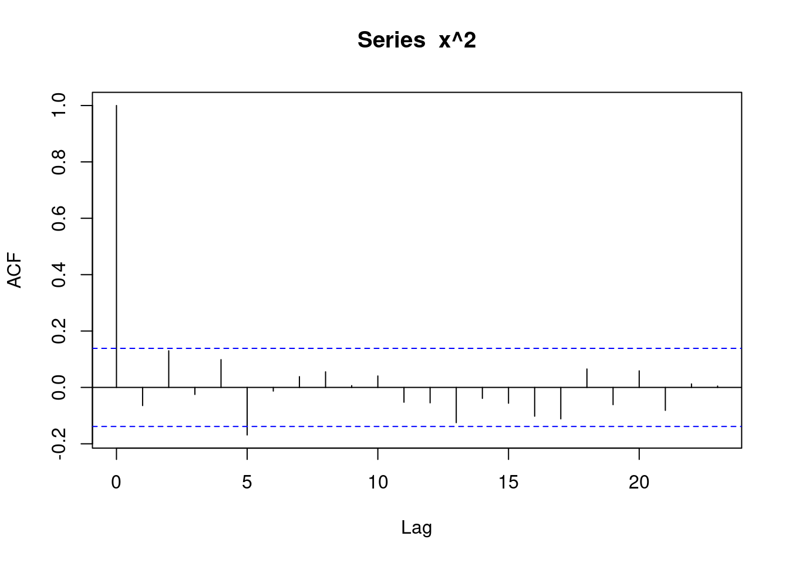

# install.packages(c("quantmod", "tidyverse", "xts", "rugarch"))
library(quantmod)
library(tidyverse)
library(xts)
library(rugarch)8 Conditional Heteroskedasticity
9 Example
In the following example we will model the adjusted closing prices of the TESLA stock. We will use the getSymbols function from the quantmod package to download the stock market data. The handle for TESLA is TSLA.
# Load data
dt <- getSymbols("TSLA", from = "2010-01-01", to = "2020-12-31", auto.assign = FALSE)
## Get the adjusted close price for each trading day
##
tesla <- dt$TSLA.Adjusted
plot(tesla)plot(tesla["/2012"])The series is clearly non-stationary, so we will compute the log returns series.
tesla_lr <- diff(log(tesla))plot(tesla_lr)The series shows no trend or seasonality, so we could try to fit a null model that only includes a constant.
fit_AR0 <- arima(tesla_lr, order = c(0, 0, 0))
fit_AR0
Call:
arima(x = tesla_lr, order = c(0, 0, 0))
Coefficients:
intercept
0.0019
s.e. 0.0007
sigma^2 estimated as 0.001248: log likelihood = 5089.41, aic = -10174.82Let’s check the model fit:
tsdiag(fit_AR0)We don’t detect any deviations from the white noise assumptions in the diagnostic plots. However, we see long periods of high and low volatility in the standardized residuals plot. Let’s check the ACF of the squared residuals. You can extract the residuals from the ARIMA object using the residuals function.
fit_AR0_res <- residuals(fit_AR0)
acf(fit_AR0_res^2, na.action = na.pass)We notice high autocorrelations in the squared residuals. This indicates that although the residual series appears uncorrelated, its second moment is not consistent with a pure white noise process. Look at the simulated series below to see how the squared residuals should look like if the resemble a white noise process:
x <- rnorm(200)
acf(x^2)
We should also check the distribution of the residuals.
tibble(x = fit_AR0_res) %>%
ggplot(aes(x = x)) +
geom_density(aes(colour = 'Empirical')) +
geom_histogram(aes(y = ..density..), alpha = 0.2) +
stat_function(fun = dnorm, aes(colour = 'Normal'), args = list(mean = 0, sd = sqrt(fit_AR0$sigma2))) +
labs(
x = "Residuals",
y = "Density",
color = "Type"
)Don't know how to automatically pick scale for object of type <ts>. Defaulting
to continuous.Warning: The dot-dot notation (`..density..`) was deprecated in ggplot2 3.4.0.
ℹ Please use `after_stat(density)` instead.Warning: Removed 1 rows containing non-finite values (`stat_density()`).`stat_bin()` using `bins = 30`. Pick better value with `binwidth`.Warning: Removed 1 rows containing non-finite values (`stat_bin()`).The reddish line is an empirical density estimate. The blueish line is a normal distribution with zero mean and a standard deviation equal to the estimated \(\sigma\) from the model fit. You can extract the estimated \(\sigma\) from the fit object: fit_AR0$sigma2. Notice that the normal distribution has fewer mass at the tails than the empirical density estimate.
10 ARCH models
The ARIMA models discussed so far assume that the residual process is uncorrelated and with a constant variance. The prediction interval that we introduced in the previous section relied on the assumption of normality of the error terms. However, it is common, especially in financial data to observe values of the time series that are more extreme than the normal distribution would accommodate. Another pattern that is commonly seen in financial data are volatility clusters: periods of high variance and periods of low variance.
For example, the simple stationary AR(1) model has constant unconditional variance:
\[ y_t = \phi_0 + \phi_1 y_{t - 1} + e_t, e_t \sim WN(\sigma^2) \]
\[ Var(y_t) = \frac{\sigma^2}{1 - \alpha^2} \]
The conditional variance (defined analogously to the conditional mean) can be shown to equal:
\[ Var_{t - 1}(y_{t}) = E\left(y_t - E_{t - 1}y_t^2\right) = \sigma^2 \]
This is in contrast to the conditional mean, which is not constant but depends on the previous value of the process.
\[ E_{t - 1} y_t = \phi_0 + \phi_1 y_{t - 1} \]
The idea of the ARCH models is to let the conditional variance depend on lagged values of the error term:
\[ h^2_t = Var_{t - 1}e_t = E_{t - 1}(e^2_t) \]
The ARCH(q) model uses q lags of the squared error terms to model the conditional variance
\[ h_{t}^2 = \alpha_0 + \alpha_1 e^2_{t - 1} + \alpha_2 e^2_{t - 2} + \ldots + \alpha_q e^2_{t - q} \]
To understand the correlation that is induced between the conditional variances, write the above equation for \(t + 1\):
\[ h_{t + 1}^2 = \alpha_0 + \alpha_1 e^2_{t} + \alpha_2 e^2_{t - 1} + \ldots + \alpha_q e^2_{t - q + 1} \]
To ensure that the conditional variance is positive, the coefficients must all be non-negative and \(\alpha_q > 0\).
Because the conditional volatility depends on the past values of the shocks, a large shock will tend to produce a high conditional variance that will dissipate only slowly. Small shocks will tend to produce a low conditional variance. The length of the volatility clusters is determined by \(q\).
Large values of \(q\) can lead to estimation difficulties, however, so a more parsimonious model may be needed to deal with long volatility clusters. The GARCH(q, p) model extends the ARCH model by including lagged values of the conditional variance:
\[ h^2_t = \alpha_0 + \alpha_1 e^2_{1 - 1} + \alpha_2 e^2_{1 - 2} + \ldots + \alpha_q e^2_{t - q} + \beta_1 h^2_{t - 1} + \ldots + \beta_p h^2_{t - p} \]
It is easy to show that under the GARCH(q, p) model the squared error terms \(e^2_t\) is an ARMA process.
10.1 GARCH(1, 1)
The GARCH(1, 1) model is sufficient for most cases of financial data
\[ h^2_t = \alpha_0 + \alpha e^2_{t - 1} + \beta h^2_{t - 1}, \quad \alpha_0, \alpha, \beta > 0 \]
11 Example (continued)
Let us fit a GARCH(1, 1) model to the TESLA data. There are several packages in R that can fit GARCH model, in my experience the rugarch package is the most versatile and robust. The rugarch package requires two steps to fit a model: first the model is described with the ugarchspec function and then the model specification object is applied to the data in the ugarchfit function. The ugarchfit function will throw an error with our data, because we have a missing value due to the differencing. To fit the model, we need to remove the missing value, for example using the [ subsetting operator.
mod <- ugarchspec(
variance.model = list(
model = "sGARCH",
garchOrder = c(1, 1)
),
mean.model = list(
armaOrder = c(0, 0),
include.mean = TRUE
),
# Normal distribution
distribution.model = "std"
)
## Remove the first element of the time series because
## it is missing due to the differencing and causes an error
## in ugarchfit
tesla_lr_nona <- tesla_lr[-1]
fit_GARCH11 <- ugarchfit(spec = mod, data = tesla_lr_nona$TSLA.Adjusted)
fit_GARCH11
*---------------------------------*
* GARCH Model Fit *
*---------------------------------*
Conditional Variance Dynamics
-----------------------------------
GARCH Model : sGARCH(1,1)
Mean Model : ARFIMA(0,0,0)
Distribution : std
Optimal Parameters
------------------------------------
Estimate Std. Error t value Pr(>|t|)
mu 0.001496 0.000497 3.0123 0.002593
omega 0.000019 0.000010 1.8948 0.058117
alpha1 0.043625 0.013733 3.1767 0.001490
beta1 0.944668 0.018782 50.2978 0.000000
shape 3.544106 0.258423 13.7144 0.000000
Robust Standard Errors:
Estimate Std. Error t value Pr(>|t|)
mu 0.001496 0.000471 3.1737 0.001505
omega 0.000019 0.000020 0.9366 0.348965
alpha1 0.043625 0.027192 1.6044 0.108635
beta1 0.944668 0.039401 23.9756 0.000000
shape 3.544106 0.251615 14.0854 0.000000
LogLikelihood : 5488.864
Information Criteria
------------------------------------
Akaike -4.1466
Bayes -4.1355
Shibata -4.1466
Hannan-Quinn -4.1426
Weighted Ljung-Box Test on Standardized Residuals
------------------------------------
statistic p-value
Lag[1] 0.3219 0.5705
Lag[2*(p+q)+(p+q)-1][2] 0.4110 0.7369
Lag[4*(p+q)+(p+q)-1][5] 0.4716 0.9620
d.o.f=0
H0 : No serial correlation
Weighted Ljung-Box Test on Standardized Squared Residuals
------------------------------------
statistic p-value
Lag[1] 7.075 0.007817
Lag[2*(p+q)+(p+q)-1][5] 9.528 0.012154
Lag[4*(p+q)+(p+q)-1][9] 11.840 0.019720
d.o.f=2
Weighted ARCH LM Tests
------------------------------------
Statistic Shape Scale P-Value
ARCH Lag[3] 0.06031 0.500 2.000 0.8060
ARCH Lag[5] 0.84917 1.440 1.667 0.7782
ARCH Lag[7] 2.66518 2.315 1.543 0.5789
Nyblom stability test
------------------------------------
Joint Statistic: 0.6341
Individual Statistics:
mu 0.12344
omega 0.13037
alpha1 0.19978
beta1 0.14994
shape 0.09721
Asymptotic Critical Values (10% 5% 1%)
Joint Statistic: 1.28 1.47 1.88
Individual Statistic: 0.35 0.47 0.75
Sign Bias Test
------------------------------------
t-value prob sig
Sign Bias 0.42084 0.67391
Negative Sign Bias 1.90342 0.05709 *
Positive Sign Bias 0.07533 0.93996
Joint Effect 7.00134 0.07186 *
Adjusted Pearson Goodness-of-Fit Test:
------------------------------------
group statistic p-value(g-1)
1 20 18.66 0.4789
2 30 34.12 0.2349
3 40 40.38 0.4090
4 50 48.21 0.5049
Elapsed time : 0.3245304 fit_GARCH11_res <- residuals(fit_GARCH11, standardize = TRUE)acf(fit_GARCH11_res^2)11.1 Forecasting
ugarchforecast(fit_GARCH11, n.ahead = 10)
*------------------------------------*
* GARCH Model Forecast *
*------------------------------------*
Model: sGARCH
Horizon: 10
Roll Steps: 0
Out of Sample: 0
0-roll forecast [T0=2020-12-30]:
Series Sigma
T+1 0.001496 0.03916
T+2 0.001496 0.03917
T+3 0.001496 0.03919
T+4 0.001496 0.03920
T+5 0.001496 0.03921
T+6 0.001496 0.03922
T+7 0.001496 0.03924
T+8 0.001496 0.03925
T+9 0.001496 0.03926
T+10 0.001496 0.03927